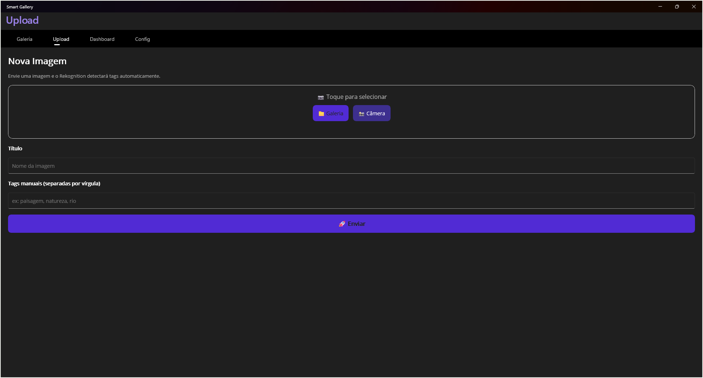
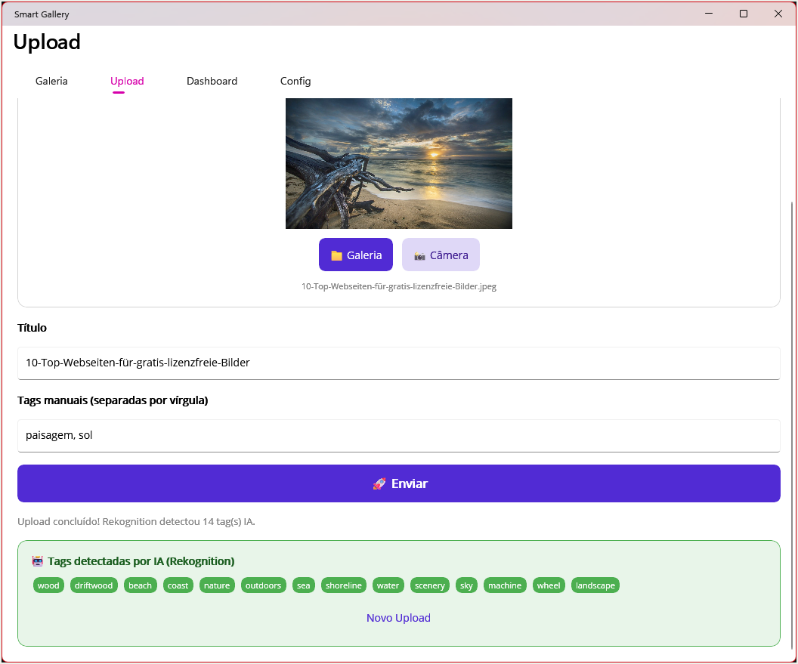

Capturas reais
O aplicativo em ação
Cada screenshot foi capturada diretamente do Smart Gallery conectado à API na AWS.
As imagens foram classificadas automaticamente pela IA (Rekognition).

Galeria
Grid de imagens — Tema escuro
10 imagens com tags geradas pelo Rekognition.

Dashboard
Analytics — Tema escuro
KPIs, formatos e ranking de tags IA.

Upload
Tela de envio — Tema escuro
Seleção via galeria ou câmera, tags manuais.

Galeria
Grid de imagens — Tema claro
Adaptação ao tema claro do SO.

Upload + IA
Envio com resposta do Rekognition
14 tags detectadas automaticamente pela IA.

Dashboard
Analytics atualizado pós-upload
11 imagens, 1 MB, tags nature e outdoors liderando.